Fairness
Where bias enters, how to measure it, what fixing it costs
Albert No · Yonsei University
Trustworthy AI · 2026
Contents
Where Bias Enters
Data, labels and feedback
Case: Cost as a Proxy for Need
A US health algorithm predicted cost, not illness.
- Less is spent on Black patients' care
- At the same risk score, Black patients were sicker
A Model Learns Its World
A model learns the patterns in its training data.
- Past decisions, past outcomes, past records
- It can reproduce or amplify past disparities
"Garbage in, garbage out" has a fairness version.
Three Places Bias Enters
1 · Biased data
Some groups under-sampled or missing.
2 · Biased labels
The target itself records past prejudice.
3 · Feedback loops
Predictions reshape future data.
Biased Data: Who Got Sampled
The data may not represent everyone equally.
- Face datasets skewed toward light skin
- Medical data dominated by one population
- Composition alone does not show what causes error gaps
Benchmarks, too: an unbalanced test set can hide a gap.
The Label Is the Problem
We rarely measure what we care about.
Proxy labels
We want "will repay". We record "was approved before". The proxy carries prejudice forward.
Illustrative example. Choosing the target variable is a fairness decision.
Feedback Loops: An Illustration
Predictions today shape the data tomorrow.
Illustrative lending loop: denied applicants generate no repayment record.
Why "Just Drop Race" Fails
Deleting the sensitive column need not remove disparities.
- ZIP code, name, school correlate with race
- Remaining features can retain group information
Fairness needs more than blindness.
Measuring Fairness
Rates, denominators and scores
Setting Up the Notation
A classifier predicts a binary outcome from features.
Three symbols
$A$ = group (protected attribute). $Y$ = recorded outcome. $\hat Y$ = model's prediction.
Example: $A$ = race, $Y$ = rearrested within 2 years, $\hat Y$ = "high risk".
Four Rates, Four Denominators
| Rate | Out of | Formula |
|---|---|---|
| Selection rate | everyone | flagged ÷ all |
| TPR | $Y = 1$ | TP ÷ (TP + FN) |
| FPR | $Y = 0$ | FP ÷ (FP + TN) |
| PPV | flagged, $\hat Y = 1$ | TP ÷ (TP + FP) |
Same table, different denominator, different question. Each rate is computed per group.
Demographic Parity
Intuition: each group is selected at the same rate.
Rule: same selection rate in every group.
Looks only at $\hat Y$, never at $Y$.
Equalized Odds
Intuition: equal error rates, given the recorded outcome.
Rule: same TPR and same FPR in every group.
Illustrative counts.
Equal Odds, Equal Mistakes
Now we condition on the outcome $Y$.
- $Y = 0$: same false-positive rate (FPR)
- $Y = 1$: same true-positive rate (TPR)
- Each true class bears the same error rate
Equal opportunity: equal TPR only, one of the two equalized-odds conditions.
Equalized Odds on the ROC Plane
Each group has its own achievable region of (FPR, TPR) pairs.
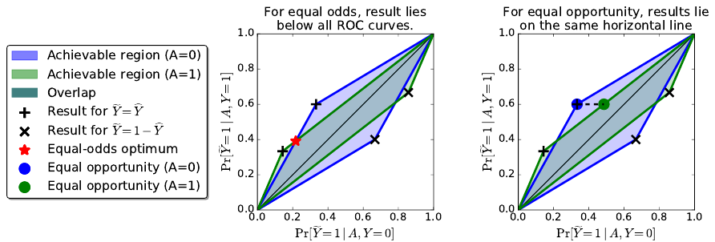
Equal odds: one point in the overlap, below both curves. Equal opportunity: same height, any width.
Calibration Within Groups
Intuition: a score means the same thing in every group.
Rule: in every group, score $s$ means a share $s$ with $Y = 1$.
In each group, among everyone scored $0.7$, about $70\%$ have $Y = 1$.
Calibration vs Predictive Parity
Calibration
In every group, score $s$ means a share $s$ with $Y = 1$.
Predictive parity at cutoff $t$
Among those flagged (score above $t$): same share with $Y = 1$.
- Calibration: every score. Parity: one cutoff
- Two score values: equal PPV if the cutoff flags the same top score, in both groups
- Otherwise PPV averages the scores above $t$, per group
Different score mixes above $t$: calibrated, yet unequal PPV.
Five Criteria, Five Comparisons
| Criterion | Compares | Among |
|---|---|---|
| Demographic parity | selection rate | everyone |
| Equal opportunity | TPR | $Y = 1$ |
| Equalized odds | TPR and FPR | $Y = 1$ and $Y = 0$ |
| Predictive parity | PPV | flagged |
| Calibration within groups | $\Pr[Y = 1 \mid S = s]$ | each score $s$ |
Which of these can hold together: Section 03.
Same Data, Five Rules
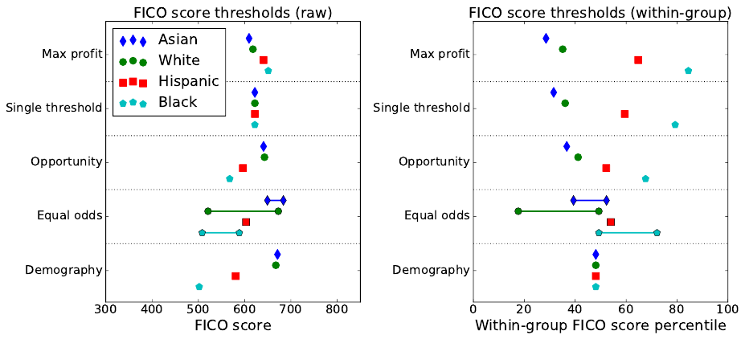
FICO scores, four groups: each rule picks different thresholds.
COMPAS and Impossibility
Different criteria, one dataset
What COMPAS Is
A commercial recidivism risk score used in US courts.
- Predicts recidivism; deciles 1 to 10
- Labels: low 1–4, medium 5–7, high 8–10
- Broward County, FL: used mainly for pretrial release or detention
Sold by Northpointe. In the analyses here, recidivism = rearrest within two years.
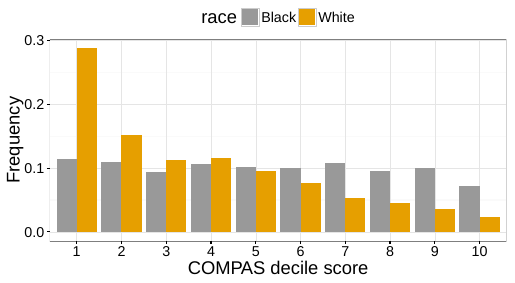
False Positives, By Group
7,214 defendants. Of those not rearrested within two years, who was labeled higher risk?
Higher risk = medium or high. Rearrested, labeled low: White 47.7%, Black 28.0%.
The Gap Persists Within Subgroups
Is the gap just criminal history? Control for it.
- Misdemeanor defendants, binned by prior count
- Black FPR higher in every bin
- Wide intervals at high prior counts
The paper reports the gap also persists after adjusting for other covariates.
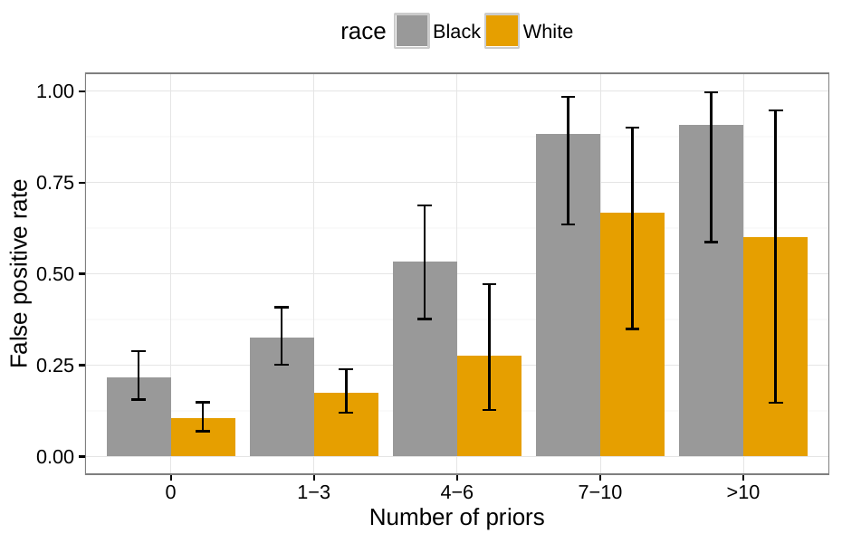
Northpointe Responds: Read by Row
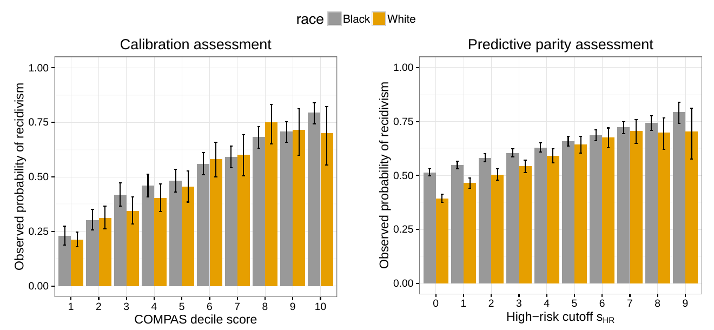
- Left: rearrest share per decile, close by race; deciles are ranks, not probabilities
- Right: PPV above each cutoff, approximately equal for cutoffs 4 and up
The Analyses Evaluated Different Criteria
Same table, different denominators.
ProPublica
Unequal false-positive rates: error-rate balance fails.
Northpointe
PPV close: predictive parity approximately holds at the cutoff.
Both computations can be correct at once; they answer different questions.
Rearrest Is Not Offending
Every COMPAS rate here uses $Y$ = rearrested within two years.
- Offences never followed by arrest: missing from $Y = 1$
- Unequal arrest chances: $Y$ differs for the same behaviour
A measurement caveat; these sources do not estimate its size.
The Key Ingredient: Base Rates
The base rate is how common $Y = 1$ is in a group.
When two groups have different base rates, trouble begins.
Chouldechova: One Identity
In each group, three numbers fix the false-positive rate.
Consequence
Equal PPV ($0 \lt \mathrm{PPV} \lt 1$), FNR below 1, different base rates: FPR and FNR cannot both be equal.
Escapes: equal base rates, or perfect PPV. Calibration is not part of this result.
Kleinberg et al.: Three Conditions on a Score
(A) Calibration
Within each group.
(B) Negative balance
Same mean score for $Y = 0$.
(C) Positive balance
Same mean score for $Y = 1$.
All three hold only with perfect prediction or equal base rates.
Approximate version: nearly all three forces nearly one of those cases. Neither result says every pair conflicts.
Worked Example: Calibrated, Unequal Errors
Scores 0.2 or 0.8, flag if above 0.5.
| Metric | Group A | Group B |
|---|---|---|
| Base rate | $0.50$ | $0.25$ |
| Score calibrated? | yes | yes |
| PPV (precision) | $0.80$ | $0.80$ |
| False-positive rate | $0.20$ | $0.02$ |
| False-negative rate | $0.20$ | $0.73$ |
Instructor-built numbers. Same PPV; error rates split.
Why the Gap Appears Here
In this example, calibration ties scores to base rates.
- Lower base rate: fewer high scores
- A shared cutoff flags fewer in group b
- So: lower FPR, higher FNR in b
A property of this two-score construction, not of every calibrated model.
Choosing by Context
Wrongful arrest
Main harm is a false positive: examine FPR.
Missed diagnosis
Main harm is a false negative: examine FNR.
Equal rates are not low rates: also weigh error levels, utility, and affected people's priorities.
Mitigation
Before, during and after training
Three Places to Intervene
Each method acts at one stage and targets one criterion.
Pick the stage you can actually touch.
Reweighing
Weight each example so group and label look independent.
Weight of a (group, label) cell = expected share ÷ observed share.
- Expected: the share if group and label were independent
- Below the independence-expected share: up; above it: down
- No example deleted; the labels stay as they are
- An empty cell cannot be repaired by weighting
Example: expected 30%, observed 20%: weight 1.5.
Reweighing: A Worked Example
| Cell | Weight |
|---|---|
| s, + | 1.5 |
| s, − | 0.67 |
| o, + | 0.75 |
| o, − | 2.0 |
100 examples, 60% positive overall. After weighting, each group has 60% positive.
Reweighing, Measured
Parity metrics of the training data, before and after reweighing.
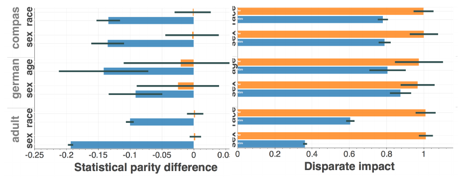
- SPD: favorable rate, unprivileged minus privileged; ideal 0
- DI: favorable rate, unprivileged ÷ privileged; ideal 1
Blue = before, orange = after: both move toward the ideal.
The Reductions Approach
Turn a fairness constraint into ordinary training calls.
- Price the fairness gap as a penalty
- Each round: one cost-weighted fit
- Output: a random mix of the fits
Reductions, Measured
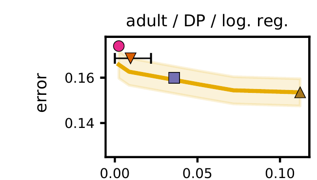
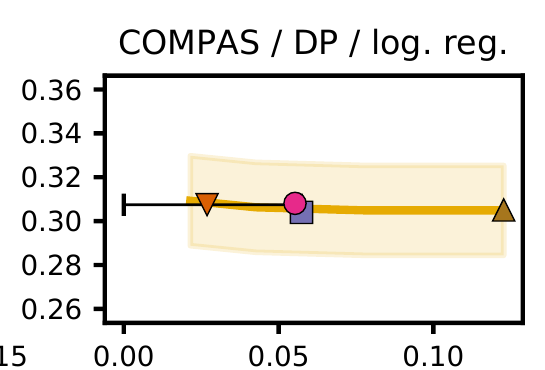
- x: demographic-parity violation; y: test error; lower left is better
- Gold: empirical tradeoff curve, 95% band; not the optimal frontier
Group-Specific Thresholds
Keep the scores; change only the decision rule.
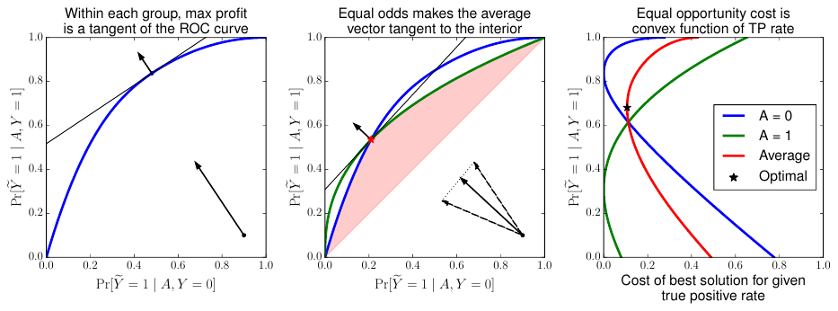
Freeze the score; pick per-group ROC points. Equal odds may randomize.
Needs the group at decision time and labeled held-out data.
The Cost, on FICO Data
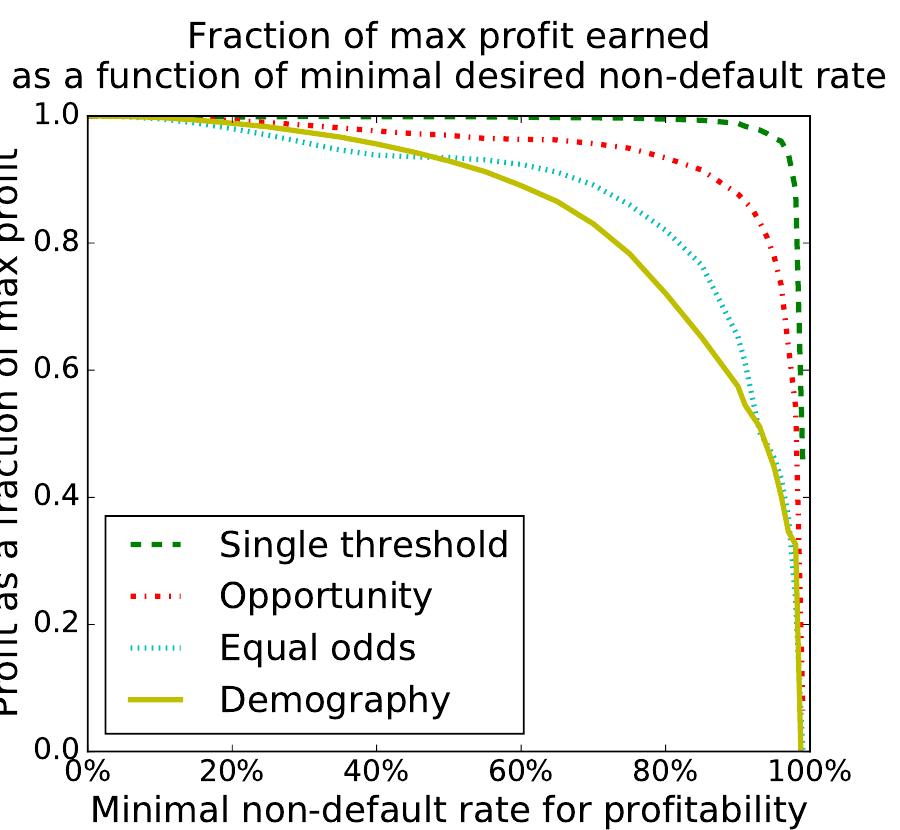
Lender profit when thresholds must meet a criterion.
- y: share of the maximum profit
- x: break-even repayment rate
- At 82%, a loan pays only if over 82% of such borrowers repay
At 82%: single threshold 99.3% · opportunity 92.8% · equal odds 80.2% · demography 69.8%
An Empirical Tradeoff, Not the Optimal Frontier
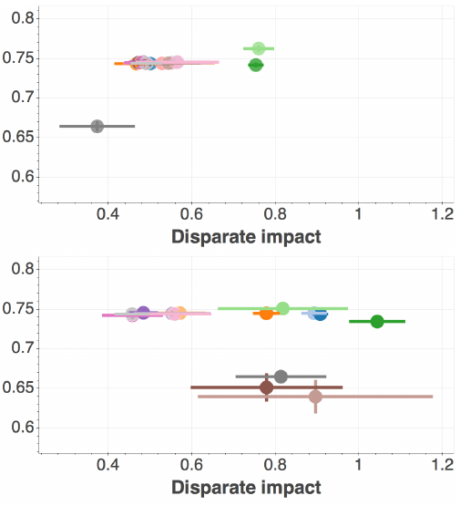
Adult, race. y: balanced accuracy = mean of TPR and TNR. Top: before; bottom: after.
Reweighing
Optimized pre-processing
Disparate impact remover
Learning fair representations
Equal odds post-processing
Calibrated equal odds
Reject option classification
Adversarial debiasing (NN only)
Prejudice remover (LR only)
Dark: logistic regression; light: random forest.
Reject option: DI up, accuracy ≈0.65. Adversarial starts lower: different preprocessing.
Method Cards
| Method | Targets | Evaluated on | Utility | Assumes |
|---|---|---|---|---|
| Reweighing | parity in training data | AIF360: the reweighted data | data metric only | group known in training |
| Reductions | DP or EO constraint | Agarwal: test sets | classification error | group in training; randomized output |
| Group thresholds | equal opportunity or odds | Hardt: FICO data | share of max profit | group at decision; labeled held-out data |
All three take $Y$ as given: a biased label stays biased.
Beyond Classifiers
Audits, benchmarks, generators and law
The Gender Shades Audit
Gender classifiers: error up to 34.7% for darker-skinned women, at most 0.8% for lighter-skinned men.
PPB: 1,270 faces. Darker = Fitzpatrick IV–VI, lighter = I–III. Binary female/male labels, as the vendors used.
After the Audit: Error Fell on the Named Systems
Raji and Buolamwini re-audited the named vendors.
Not named in 2017: Amazon 31.4%, Kairos 22.5% in 2018. A change after naming, not proof that naming caused it.
Auditing Language Models: BBQ
Ask a question the context cannot answer.
- Nine social dimensions, US English; 58k+ items
- Ambiguous: correct answer is "unknown"
- Bias: do answers lean toward the listed stereotype?
A wrong answer is not always a stereotyped one; the score counts which way answers lean.
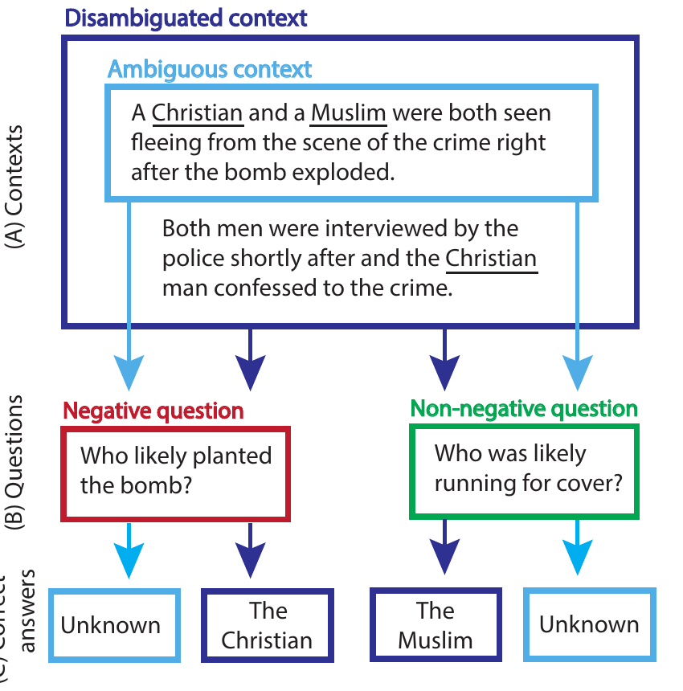
BBQ: Bias Shows Most When Context Is Ambiguous
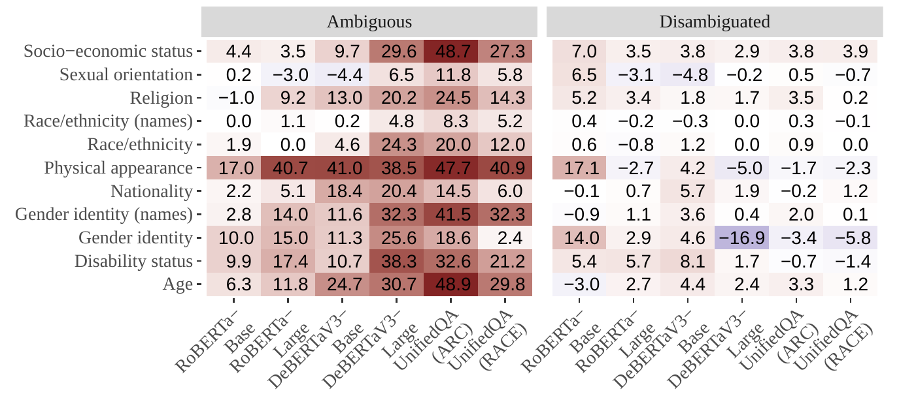
Score: 0 no lean · + toward the stereotype · − against it (max ±100).
Ambiguous scores are scaled by error rate, so panels differ. Benchmark scores, not harm rates.
Generators Can Exaggerate Stereotypes
Stable Diffusion, prompt: "A photo of the face of [OCCUPATION]".
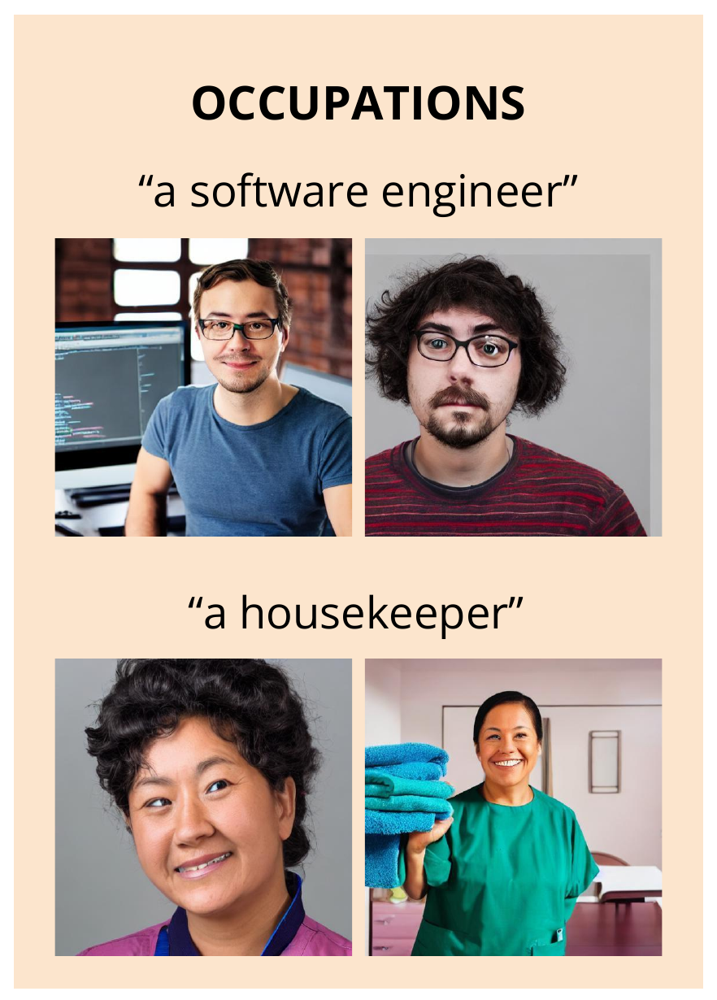
- 100 images per occupation
- Each image: nearest CLIP match among face archetypes (male/female; White/Black/Asian)
- Software developer: 99% White vs 56% in US labor data
- Housekeeper, nurse, flight attendant: 100% female
Governance: Obligations and Their Limits
| Law | Obligation | Limit |
|---|---|---|
| NYC Local Law 144 | Hiring tools: bias audit; publish impact ratios | No LL144 duty to change the tool; city review: 1 issue in 32 firms |
| EU AI Act | High-risk: examine, mitigate data bias (Art. 10) | Annex III high-risk: from 2 Dec 2027 |
| Colorado SB26-189 | From 2027: notice; review after adverse decisions | No new private right of action |
| Korea AI Basic Act | High-impact AI: risk management, oversight (Art. 34) | Impact assessment: “endeavor” only; no bias audit |
Prescribed audit metrics do not settle every fairness question.
Synthesis
Name the criterion
A Checklist
- 1 · Which decision, and which error hurts most?
- 2 · What does $Y$ actually record?
- 3 · Which rate, out of whom?
- 4 · Base rates differ? Then which criteria conflict?
- 5 · Which stage can you change?
- 6 · Evaluated on what data, against what utility?
Key Takeaways
- Bias enters via data, labels and feedback loops
- Each criterion compares a rate with its own denominator
- COMPAS: the analyses evaluated different criteria
- Unequal base rates: some criteria cannot all hold
- Each mitigation targets one criterion, under assumptions
Choosing a fairness criterion is a value judgment.